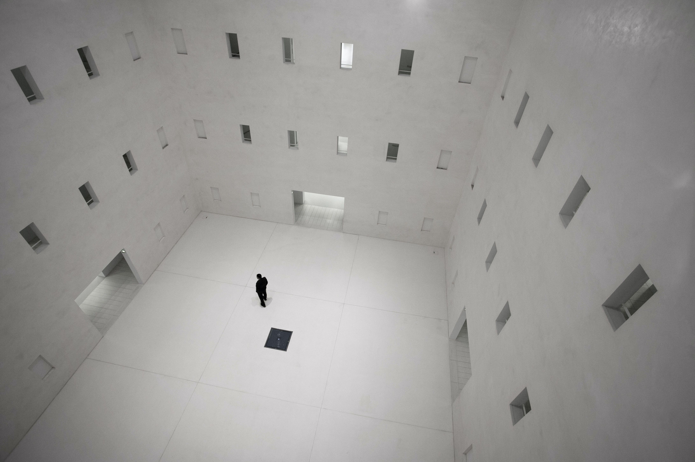

<!DOCTYPE html>
<html>
  <head>
    <meta charset="utf-8">
    <title></title>
  </head>
  <body>
<h2><a href="index.html"Political Philosophy</a></h2>
  </body>
</html>

<head>
  <title>Homo Sacer</title>
  <meta charset="utf-8">
</head>

<ol>
  <li><a href="1.html"> Carl Schmitt_                     1888.07.11~1985.04.07</a></li>
  <li><a href="2.html">Walter Bendix Schönflies Benjamin_1892.07.15~1940.09.27</a></li>
  <li><a href="3.html">Giorgio Agamben_                  1942.04.22~</a></li>
</ol>
<h1><strong><u>Homo Sacer</u></strong></h1>
<h3>II potere sovrano e lanuda vita</h3>

<br>
<body>
<h3><u>주권권력과 벌거벗은 생명</u></h3>
<br>
<h4>주권의 역설</h4>
<a href="https://ko.wikipedia.org/wiki/%EC%B9%B4%EB%A5%BC_%EC%8A%88%EB%AF%B8%ED%8A%B8"target="_blank">

"주권자는 법질서의 외부와 내부에 동시에 존재한다."</a>"
</body>
</html>

https://en.wikipedia.org/wiki/Walter_Benjamin
https://ko.wikipedia.org/wiki/%EC%A1%B0%EB%A5%B4%EC%A1%B0_%EC%95%84%EA%B0%90%EB%B2%A4
